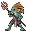
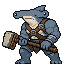
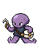
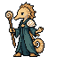
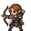
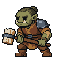
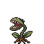
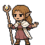
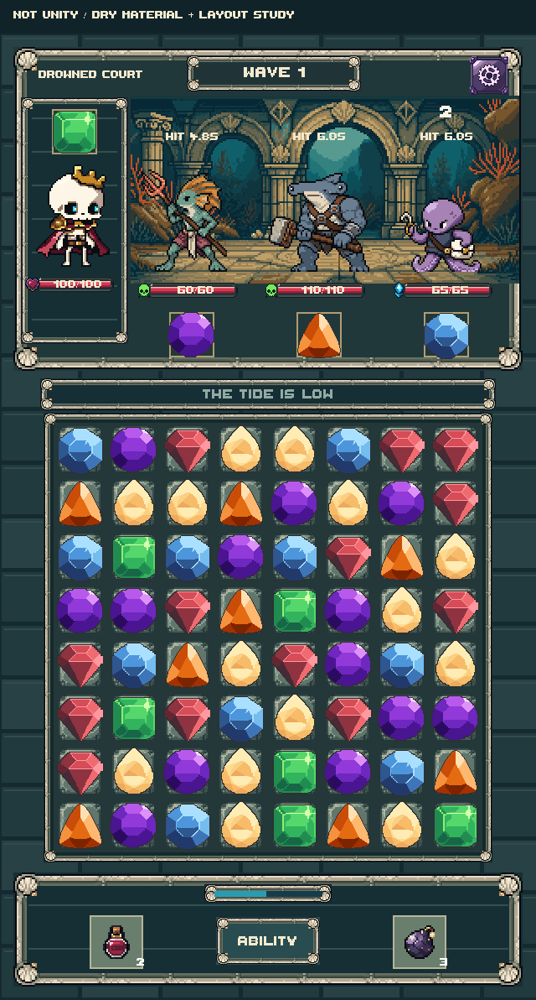
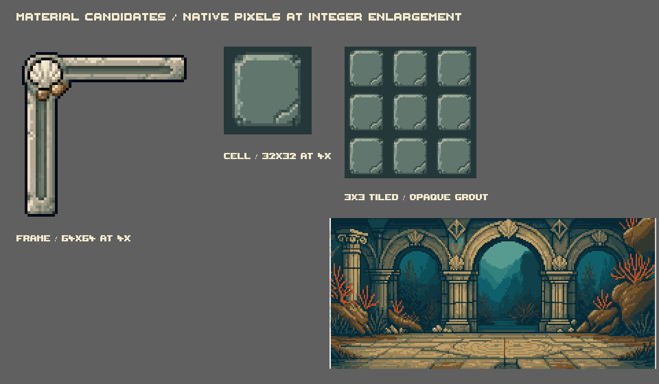

CANDIDATE · A01

Reef Spearman
Lean reef-fish fighter. Amber crest, cream throat, wine wrap and a two-handed coral trident.
64 × 64 · 21 colors · binary alpha
DUNGEON MATCHER / SUNKEN MARCHES / PHASE 02
Four sea-born identities and the first marine material study.
Review the face, species silhouette, gear and palette for each. Native cleanup consolidated redundant shades and unified the outline to #0A0D11; every character's pixel positions and transparency mask are unchanged from its raw PixelLab return.

Lean reef-fish fighter. Amber crest, cream throat, wine wrap and a two-handed coral trident.
64 × 64 · 21 colors · binary alpha

Broad hammerhead silhouette. Slate skin, pale muzzle and a low, two-handed mooring-club grip.
64 × 64 · 15 colors · binary alpha

Compact octopus-folk thief. Two planted tentacle feet, pearl hook and hinged shell satchel.
64 × 64 · 14 colors · binary alpha

Slender seahorse-folk healer. Sandy face, dark teal robe, shell shoulder and spiral staff.
64 × 64 · 13 colors · binary alpha
Same pixel scale on neutral grey. Species keep their natural size differences; the Thief is intentionally smaller. Comparisons support visual judgment, while the individual PNG checks below establish native dimensions and colors.




Use browser zoom 100% for native pixel viewing. 1× comparison PNG · 3× comparison PNG · Raw / cleaned comparison
Worn shell-and-stone frames, coral ruins and a quiet full-pitch board cell. The player and bottom HUD use a darker inset finish. Flooding adds a restrained water layer while preserving the gem colors and the board's position.

Dry: the reserved strip shows a quiet tide cue. Board dimensions stay fixed.
One generated environment study, frame corner and cell. Frame assembly, backing patterns, water tint and oxygen rings are local compositing/layout work. This is not a finished production skin, actual gameplay or device validation. Thaleah is rendered into PNGs; no font file is distributed.
The environment's returned pale padding is cropped at native coordinates for the screen study. Raw and full-size candidate files are included.

Frame PNG · 64×64 · Cell PNG · 32×32 · Environment PNG · 256×128
| Candidate | Native canvas | Occupied bounds (exclusive) | Raw → final colors | Alpha values | Candidate SHA-256 |
|---|---|---|---|---|---|
| DC_A01_Reef_Spearman | 64 × 64 | [2, 3, 53, 64] | 51 → 21 | [0, 255] | 872f89073d7320871a41e9d76a0d4fb248053d9e55f9a0d9fac4bf1e1e3ad15a |
| DC_A02_Hammerhead_Bruiser | 64 × 64 | [2, 5, 62, 64] | 38 → 15 | [0, 255] | ca39768c0c05e9511631c2d2422f9d200d4e492ccf132a4c6a6491bb1a74f927 |
| DC_A03_Pearl_Thief | 64 × 64 | [4, 19, 53, 63] | 26 → 14 | [0, 255] | 6301158a32b9806bb457c16b0a8998da0caad8e29c027640f852ac02b515104d |
| DC_A04_Pearl_Cantor | 64 × 64 | [6, 2, 50, 64] | 22 → 13 | [0, 255] | 229f780f36427e71d3d627189774fd0c4915f91d6e220df0d793e1813a13920e |
| DC_E01_Reefgate_Study | 256 × 128 | [0, 0, 256, 128] | 21 → 21 | [255] | 8081011afe484fae52e92b4b197a18280b2d7eb39ab6d279f2217f14ddee0410 |
| DC_M01_Marine_Frame | 64 × 64 | [2, 2, 62, 62] | 33 → 33 | [0, 255] | 1c53fcb3e9bf21192b0fa7732b37ba701dd2aeb3e03fd7034a1ed782119041d6 |
| DC_M02_Marine_Cell | 32 × 32 | [0, 0, 32, 32] | 31 → 7 | [255] | 755820c4f5a9aa9e81071e52581ffc7d8f24519439fcc961785e1f0ed634bdbd |
All four character PNGs are 64×64, use binary transparency and retain their raw alpha masks exactly. The Spearman's 21-color palette supports distinct skin, crest, cloth, coral and shaft materials; no universal color cap was imposed. The cell is fully opaque, including its grout corners.
Seven paid requests completed. Subscription balance moved from 1,581 to 1,542, confirming 39 units for this batch. Per-request estimates were 5 each for the four stills, frame and cell, and 9 for the environment. There were no failed, duplicated or additional generation requests. The initial batch has 1 unused unit; all 20 revision units remain held.
Generation ledger · Approved ceiling · Exact palette mappings · Full palette/source manifest · Technical checks · Phase handoff
Please mark each as keep or revise: Reef Spearman, Hammerhead Bruiser, Pearl Thief and Pearl Cantor. Then give your choice for the marine frame, cell and coral-ruin direction. Specific changes can use the reserved revision allowance after this review.
No other roster stills, animation, Bardley change, gameplay implementation or later phase begins from this gallery alone.